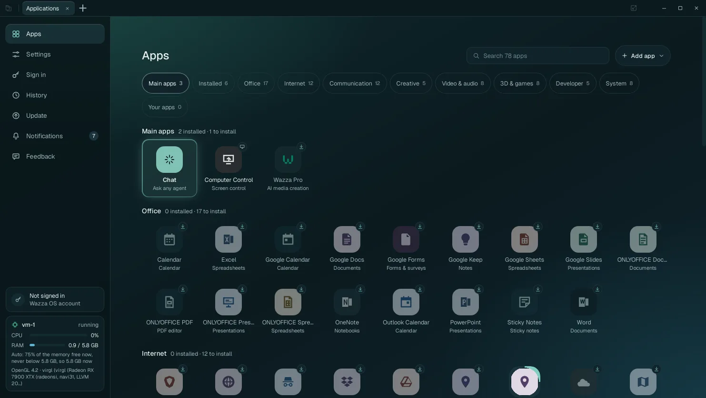
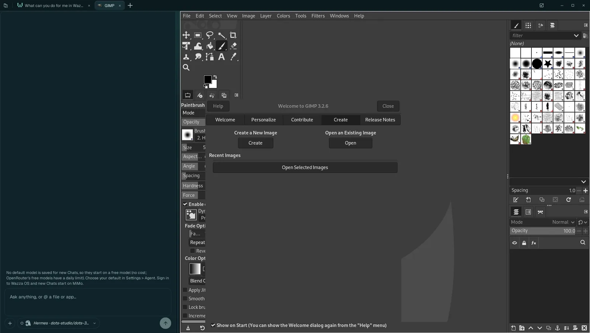
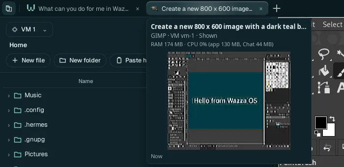
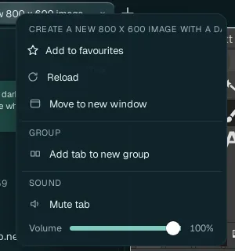
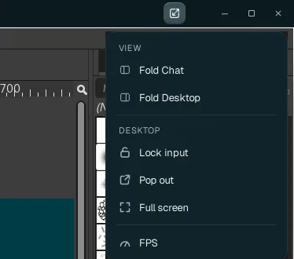
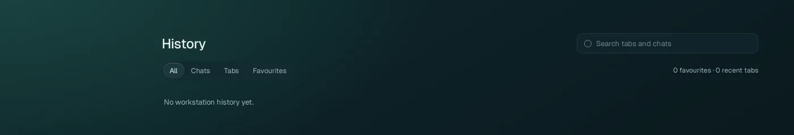
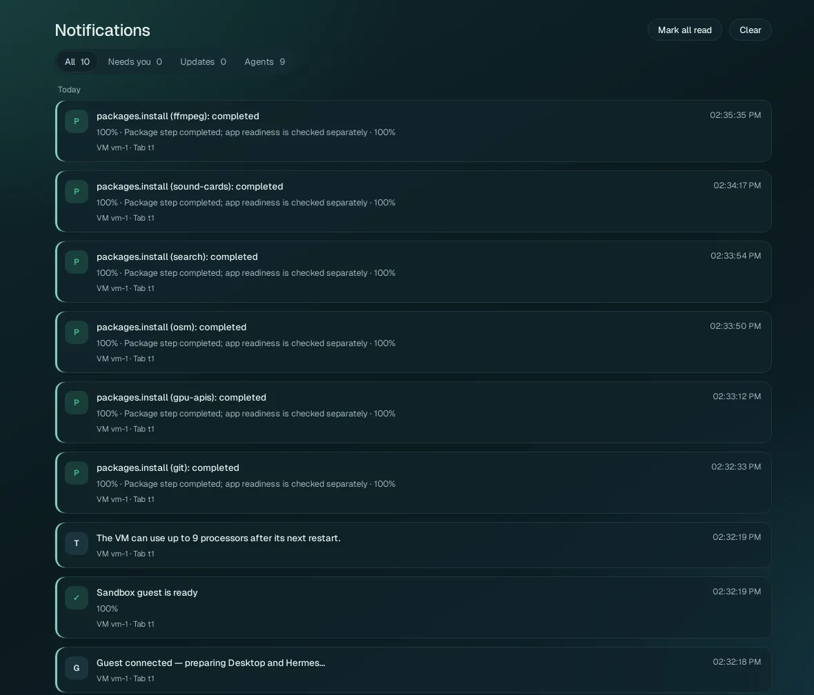
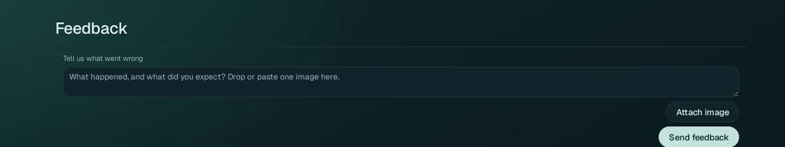

Getting around
The Wazza OS window has a tab strip at the top and the tab you are on below it. One tab is special: Home, with its menu on the left (Apps, Settings, Sign in, History, Update, Notifications, Feedback). Every other tab shows one app of the VM with its own Chat beside it.
The window#

1 2 3 4 5 6 7 8 9Explorer: opens the side panel with the VM's files (below).
Tabs: one per open app (and Home). Click one to show it; drag one to move it.
+ (Show apps): opens Home on Apps, to open or install an app.
Desktop menu: fold the Chat or the app, lock input, pop out, full screen, frame rate (below). Grey on Home, where there is no app.
Window buttons: minimize, maximize, close. Closing the window quits Wazza OS and stops its VMs (your tabs come back at the next start).
Home menu: Apps, Settings, Sign in, History, Update, Notifications (with the number of unread ones), Feedback. Below 1024 px of width it becomes a column of icons.
Account card: Not signed in, or the Wazza OS account you are signed in with. A click opens Sign in.
VM card: the VM this window shows, live (below).
The page of the Home menu item you picked (here Apps).
Home#
Home is the tab of Wazza OS itself. It opens on the page you pick in its menu; each page opens in the same Home tab (the tab's name follows the page: Applications, Settings, Sign in…).
| Home menu item | What it is | Page |
|---|---|---|
| Apps | Every app you can open or install, by category, with search and Add app | Apps and tabs |
| Settings | Eight pages of settings | Settings |
| Sign in | Your Wazza OS account, plan logins, API keys, custom APIs, web apps | Sign in |
| History | Your past tabs and Chats, to search and reopen | below |
| Update | A newer version of Wazza OS | The Update page |
| Notifications | Everything Wazza OS told you | below |
| Feedback | Tell the Wazza team what went wrong | below |
The VM card#
The card at the bottom left of Home, live while Home is open:
- the VM's name and state (vm-1 · running);
- CPU: how busy the VM's processors are;
- RAM: the memory the VM uses, of the most it may take now (0.9 / 5.8 GB);
- how that limit is set (Auto: 75% of the memory free now, never below 5.8 GB, so 5.8 GB now; see VM resources › Memory);
- the graphics the VM's apps get (OpenGL 4.2 · virgl (…): your graphics card, through virtualization).
Tabs#
A tab shows one app of the VM, with its Chat beside it: the agent of that Chat works in that app. Tabs keep running when you switch away: an app keeps working and its agent keeps going in the background.

1 2 3 4 5 6The tab, named after its app, then after the first thing you ask its Chat.
The tab's Chat (Chats, agents and models).
The divider: drag it to give the Chat or the app more room. Which side the Chat is on is a setting (General › Chat side).
The app, live from the VM. Click into it and use it as on your own computer: your mouse and keyboard go to the app while the pointer is over it.
The composer, where you write to the agent.
The agent and model this Chat uses (a click opens the model window).
Open, switch and close tabs#
- Open: click +, then an app on the Apps page (or ask a Chat to open one). An app that is not installed yet installs first, then opens (Install an app).
- Switch: click a tab. A tab an agent opened in the background carries a badge until you look at it.
- Close: the × on the tab. Its app is asked to close (it may ask you to save).
- Reopen: a closed tab is in History.
The tab card#

Hold the pointer over a tab: a card shows its full name, its app and VM, what it uses now (memory and CPU, split between the app and its Chat) and a small picture of it.
The tab menu#

Right-click a tab:
| Item | What it does |
|---|---|
| Add to favourites | Keeps the tab in History › Favourites, to reopen it in one click. |
| Reload | Restarts the tab's app (when it stopped answering, for example). |
| Move to new window | Moves the tab into a new Wazza OS window; its app and its Chat go on there. |
| Group › Add tab to new group | Puts the tab in a named, coloured group (type a name, pick a colour); the group's own menu adds tabs or Ungroups them (they stay open). |
| Sound › Mute tab, Volume | Only what you hear from this tab. An agent working in it still hears the app. Only the tab you are on is heard. |
| Close tab | (on tabs that can be closed) Closes it; its app is asked to close. |
Many tabs#
When the strip is full, tabs shrink to their icons, then fold into one square that shows how many there are: click the square to see every tab and pick one. How many tabs show before they fold: General › Tabs shown before they fold.
The Desktop menu#

The button at the top right, left of the window buttons, on an app tab:
| Item | What it does |
|---|---|
| Fold Chat / Show Chat | Hides this tab's Chat to give the app the whole width (and back). |
| Fold Desktop / Show Desktop | Hides the app to give the Chat the whole width (and back). |
| Lock input / Unlock input | Locked, your clicks and keys no longer reach the app: watch an agent work without getting in its way. |
| Pop out | Shows the app in its own window, which you can move to another screen. Closing that window puts it back in its tab. |
| Full screen | The app fills the screen (a square at its top right opens this menu again, to leave full screen). |
| FPS | Shows the live frame rate of the app's picture, at the corner of the app. |
The Explorer#

The button at the far left of the tab strip opens the Explorer over the Chat: the files of the VM (its home folder), with New file, New folder, Paste here, the views (list, grid, pictures, details), reload and close. Pick another running VM at the top. Double-click a file to open it in its app, in a new tab. More in Files and sharing › The Explorer.
History#

Every tab and Chat you had, by day, with its time. Filter with All, Chats, Tabs or Favourites, or type in Search tabs and chats (it searches names, VMs, apps and the lines of Chats). On each entry: its star (favourite), Open (reopens the tab, with its Chat), and × (deletes the entry).
Notifications#

Everything Wazza OS told you, newest first, each with its time and the VM and tab it concerns. Short notices also appear for a few seconds at the bottom right of the window. Filters: All, Needs you (something waits for your answer), Updates, Agents. Mark all read clears the count on the Home menu. A notification with an action (for example Open owning tab) does it in one click.
Feedback#

Tell the Wazza team what went wrong: what happened and what you expected. You may add one image (PNG, JPEG or WebP, at most 5 MB): drop it on the box, paste it, or Attach image. Click Send feedback. It is sent without your account; Wazza OS adds only its version.